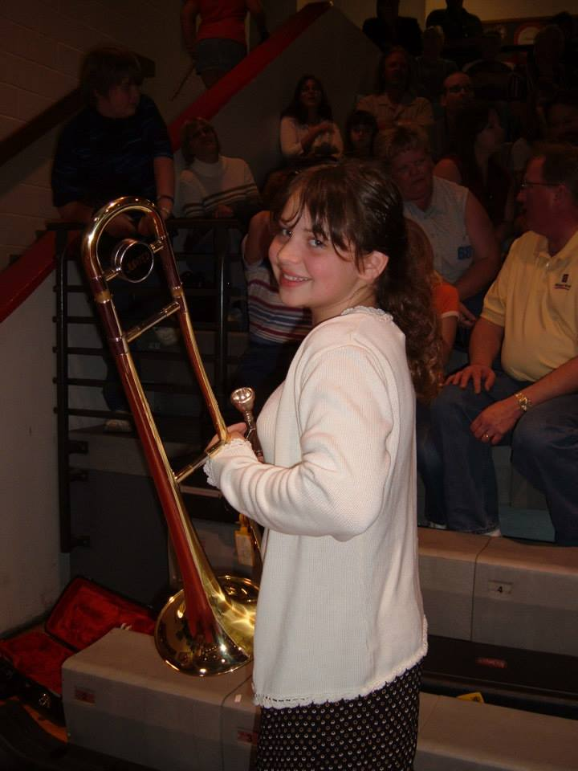
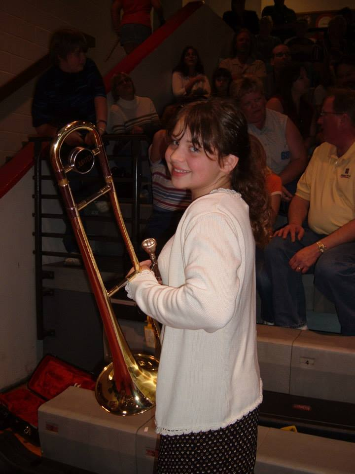

Positive Connotations
- Love
- Passion
- Strength
- Sacrifice
Cheeks burning, heart pounding, awkward first kisses. Shiny plastic solo cups on a beach made for two. Red is the color of love, and the feeling of my heartbeat when I think of you. Plus signs on a little white stick, stretchy dresses and stretchy-er skin. Flushed from hot flashes and anticipation. Red is the color of excitement, eagerly waiting to start our life.
 
